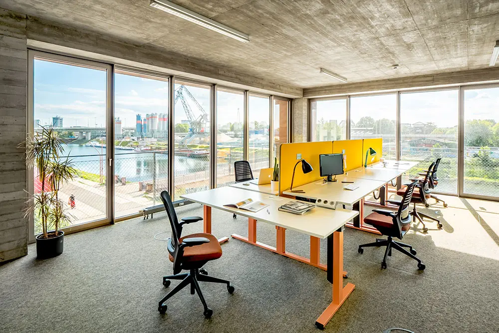
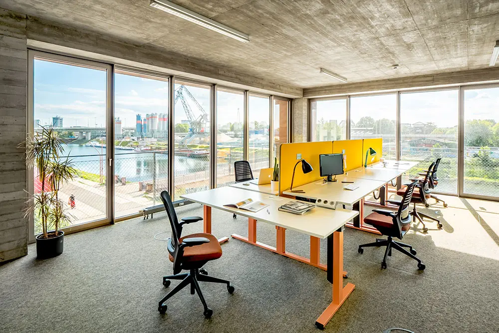

About Us
Entdecke Südkorea mit goodguides – persönlich, authentisch und unvergesslich.
 


Entdecke Südkorea mit goodguides – persönlich, authentisch und unvergesslich.
Wir sind goodguides, ein junges, engagiertes Team aus Mannheim mit einer großen Leidenschaft für Südkorea.
Unsere Mission: Dir das Land der Morgenstille nicht nur zu zeigen, sondern erlebbar zu machen,
mit echten Geschichten, lokalen Perspektiven und ganz besonderen Momenten abseits der klassischen Touristenpfade.
Ob pulsierende Metropole Seoul, ruhige Tempel im Gebirge, die faszinierende Grenze zur DVRK oder Streetfood-Abenteuer auf bunten Märkten – unsere Touren verbinden Kultur, Geschichte, Kulinarik und Zeitgeist. Dabei achten wir auf kleine Gruppengrößen, authentische Erlebnisse und einen respektvollen Umgang mit Land und Leuten.
Was uns auszeichnet:
Lokale Expertise un persönliche Reiseerfahrung,
Individuell konzipierte Touren – keine Massenware
Mehrsprachige Guides, die Korea lieben und leben,
Transparente Preise un faire Bedingungen für alle Beteiligten.
Egal ob du zum ersten Mal nach Korea reist oder ein Wiederholungstäter bist.
Wir begleiten dich mit Leidenschaft, Know-how und einem offenen Ohr – und machen deine Reise zu etwas Besonderem.
goodguides – deine Verbindung zu einem echten Korea-Erlebnis.